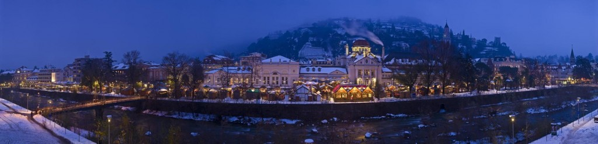
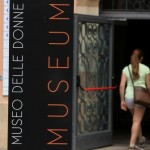
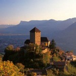
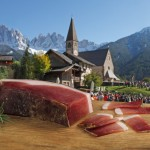
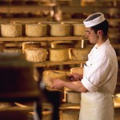
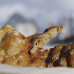
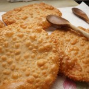

Viaggi ai Mercatini di Natale di Merano
I nostri viaggi ai Mercatini di Natale di Merano ti danno la possibilità di visitare la città e il suo centro decorato a festa in una sola giornata. Il viaggio ai Mercatini di Merano è studiato apposta per permetterti di riuscire a vivere l'emozione del natale in una sola giornata senza perdite di tempo ma soprattutto senza spendere una fortuna. Cosa stai aspettando? Regala a te e ai tuoi cari un viaggio ai Mercatini di Natale di Merano
Scheda Viaggio ai Mercatini di Natale a Merano
COS'E' INCLUSO
- Viaggio A/R con pullman GT;
- Visita Mercatini di Natale Merano;
- Visita al Thuniversum;
- Accompagnatore durante il viaggio;
- Trasferimenti come da programma;
- Assicurazione RC;
- Materiale informativo;
- Assistenza 24h;
IN REGALO PER OGNI PRENOTAZIONE
1 Voucher Omaggio per 1 persona per la SPA Il Regno di Dioniso (valido 3 mesi)
BUS
Scegli il Mercatino di Natale che più fa per TE!
HOTEL
Newsletter
Iscriviti alla Newsletter dei Mercatini di Natale e ricevi tutti gli aggiornamenti via Mail!
Contatti
02.39523309 / 02.39523311
Lun-Sab | 9.00-18.00
327.1493890
Sempre attivo e Whatsapp
Programma Viaggio ai Mercatini di Natale a Merano
- Ritrovo nei luoghi stabiliti e partenza come da elenco sotto indicato;
- Lungo il tragitto sosta per al Thuniversum, la fantastica sede delle ceramiche Thun, dove sarà possibile ammirare le meravigliose opere in ceramica che l'hanno resa riconoscibile nel mondo, dove fra angioletti, animali e numerosi oggetti decorativi per la casa si potrà acquistare anche un piccolo pensiero per sé o per amici e/o parenti;
- Arrivo a Merano, cittadina in provincia di Bolzano, in mattinata e tempo libero per visitare la città e i suoi Mercatini di Natale, e le sue 70 casettine sul fiume in cui è possibile trovare le migliori prelibatezze gastronomiche locali e gli addobbi artigianali più particolari che la rendono una delle città più importanti in Italia durante l'Avvento;
- Ritrovo nel tardo pomeriggio e ripartenza;
- Arrivo a destinazione in tarda serata
Città di Partenza Viaggio ai Mercatini di Natale a Merano
Il Pacchetto non Comprende
- quanto non specificato nella sezione nel prezzo è incluso.
Date e Orari Mercatini di Merano
Mercatini di Natale di Merano nel Centro Storico
dal 23/11/2021 al 06/01/2022 – Passeggiata Lungopassirio – Centro Storico
I Mercatini di Natale di Merano del Centro Storico si tengono lungo la Passeggiata Lungopassirio secondo la seguente programmazione:
- 22/11/2021 ore 17.00 inaugurazione
- Lunedì – Venerdì dalle 10 alle 19
- Sabato & Domenica dalle 10 alle 20
- 31/12/2021 e 31/12/2021 dalle 10.00 alle 16.00
- 01/01/2020 e 06/01/2022 dalle 10.00 alle 19.30
- 06/01/2021 dalle 10.00 alle 18.00
- 25/12/2021 Mercatino di Natale chiuso.
Gli Stand Gastronomici dei Mercatini di Natale di Merano
dal 23/11/2021 al 06/01/2022 – Passeggiata Lungopassirio – Centro Storico
Gli stand Gastronomici dei Mercatini di Natale di Merano si tengono nelle stesse date dei Mercatini di Merano ma hanno degli orari differenti:
- Lunedì –
Venerdì dalle 10.30 alle 21.30
- Sabato &
Domenica dalle ore 9.00 alle 21.30
- 08/12/2021 e
09/12/2021 dalle 9.00 alle 21.30
- 24/12/2021 e
31/12/2021 dalle 10.00 alle 17.00
- 26/12/2021
e 06/01/2022 dalle 10.00 alle
21.30
- 01/01/2020
dalle 12.00 alle 21.30
- 06/01/2021
dalle 10.00 alle 21.30
- 07/01/2021
dalle 10.00 alle 18.00
- 25/12/2021 Mercatino di Natale chiuso.
Storia di Merano
In età romana la zona dell’attuale Merano era detta
Maia e si trovava sul confine tra la provincia della Rezia e la decima regione,
la Regio Venetia/Istria, per l’esattezza ai margini settentrionali del
municipium di Trento.
In epoca tardo-antica vi si sviluppò il castrum
Maiense, un insediamento fortificato situato all’incirca nei pressi della rocca
dell’attuale castel San Zeno (Zenoberg). Nella cappella del castrum
furono sepolti San Valentino di Rezia (fine del V secolo) e San Corbiniano di Frisinga
(attorno al 730).
Nel Duecento, sotto la guida dei conti del Tirolo, in particolare
con Mainardo II, Merano conobbe un primo importante sviluppo che la portò in
seguito, dal 1418 al 1848, ad essere capitale della contea del Tirolo.
Essa crebbe
in particolare nel corso del XVIII secolo, divenendo una vera e propria città. L’antico
nucleo urbanistico, infatti, si espanse al di fuori del perimetro delle mura, su modelli
urbanistici di derivazione viennese e salisburghese, e la città assunse l’attuale
caratteristica fisionomia.
Dopo aver fatto parte per secoli dell’Impero
Austro-Ungarico, in seguito alla Prima Guerra mondiale Merano, come tutta la parte
meridionale del Tirolo, venne annessa all’Italia.
Si ricorda che dall’Ottocento essa
è anche un importante luogo di cure e di villeggiatura, ospite di molti grandi
personaggi della politica e della cultura. Grazie al suo clima mite e salubre e grazie
alle celebri Terme, essa è divenuta una delle mete più frequentate dai turisti in Alto
Adige, a maggior ragione dal 2005, quando le Terme cittadine sono state riaperte e rese
anche più attraenti dalla presenza di un lussuoso hotel all’interno.
Cosa vedere a Merano
Merano (in tedesco Meraner) è detta tradizionalmente “Porta
del Paese del Sole” in quanto, pur essendo circondata da monti, è tuttavia
caratterizzata da un clima mite e da una vegetazione mediterranea. Merano è anche
una stazione termale rinomata: è stata considerata luogo di cura sin dal XIX
secolo.
I luoghi più belli da visitare sono la Kurhaus,
edificio Liberty che veniva originariamente usato per le cure termali, oggi location
per concerti, congressi ed altre manifestazioni; il Castello
Principesco, residenza nobiliare del XV secolo, e la splendida
Passeggiata Tappeiner, lunga ben 4 km, che costeggia il pendio del
Monte Benedetto fino ad arrivare a Quarazze dalla quale si può godere di un panorama
mozzafiato.
Musei a Merano
Nonostante le sue ridotte dimensioni, Merano offre una grande quantità di Musei nel suo centro storico e nel circondario, tra cui il Museo Ebraico e la Raccolta Russo Ortodossa.
Tutti i Musei di Merano
Museo Civico
Il Museo Civico di Merano fu inaugurato nell’ottobre del 1900, negli ambienti messi allora a disposizione da alcune dame inglesi sulla Passeggiata d’Inverno. Il fulcro della collezione era costituito in origine dal lascito del medico meranese Franz Innerhofer (1847-1918), che fu anche il primo direttore del museo e presidente della Meraner Museumsverein (Associazione del Museo). L’intento di Innerhofer era di creare una collezione di rilevanza regionale, che potesse competere con il vicino museo provinciale Ferdinandeum di Innsbruck. La collezione era perciò composta principalmente da arte tirolese del Medioevo e del Barocco. I criteri di acquisizione divennero però più vasti ed eterogenei col tempo ed entrarono a far parte dei fondi del museo oggetti d’interesse storico e patriottico, come il ferro del cavallo di Andreas Hofer, antichi utensili e costumi tipici, una raccolta numismatica, una collezione di minerali e fossili, una di fotografie storiche. Inoltre, grazie a lasciti e donazioni di ospiti e meranesi, nel tempo il museo si è arricchito ulteriormente di oggetti interessanti e curiosi, come la maschera funebre di Napoleone, una mummia egiziana ed una collezione di armi del Sudan appartenuta all’avventuriero Rudolph Slatin Pascha. Dal 1911 il museo si trasferì in una nuova sede, nell’allora Jahnstraße, oggi via Galilei. Per più di ottant’anni questo edificio è rimasto la sede storica del museo civico, mentre attualmente sono in corso i lavori per la nuova sede, in piazza Steinach.

Museo della Donna
Il museo ospita la più grande e completa raccolta di abiti femminili d’Europa e contempla accessori ed oggetti della vita quotidiana delle donne del Novecento, fino agli anni ‘90 del secolo. L’esposizione, situata in via dei Portici 68, viene modificata di continuo e circa ogni 3 anni viene aggiornata secondo nuove tematiche, scelte a partire dalle mode susseguitesi nel XX secolo e dagli oggetti presenti nella collezione. Il Museo della Donna è stato fondato da Evelyn Ortner nel 1988, che ha portato al sicuro la sua voluminosa collezione, messa assieme in 40 anni di attività di raccolta ed iniziata a 17 anni, con l’acquisto di una borsetta d’epoca!
Musei nei dintorni di Merano
Le roccaforti ed i castelli
della zona di Merano non sono soltanto splendide costruzioni immerse nella natura,
ma anche siti ideali per musei ed
altre manifestazioni culturali, tra cui la disputa di tornei cavallereschi.
La
Roccaforte del Principe
Regnante ospita una raccolta di oggetti di arredamento, armi e quadri
risalenti al Medioevo, il
Museo del Vigneto è situato nel castello Rametz ed ospita una
collezione di antichi attrezzi da
lavoro usati nella viticultura e nell’agricoltura, il Museo della
Montagna di Reinhold
Messner è accolto nel castello Juval in Val Senales e
comprende foto storiche, affreschi,
una collezione di maschere (con pezzi d’esposizioni provenienti da cinque diversi
continenti), gnomi, trolls, figure
asiatiche ed equipaggiamenti delle spedizioni di Messner. Il Museo
Provinciale del Turismo dell’Alto
Adige (detto “Touriseum”) mostra lo sviluppo storico del turismo in
questa regione e dal 2003 si trova
nel castello Trauttmannsdorff (o Castel di Nova), al quale è annesso uno dei
giardini botanici più belli in Italia.
In realtà i giardini sono più d’uno: giardini del sole, giardini acquatici e
terrazzati, giardini boscati e paesaggi
dell’Alto Adige. Da metà marzo o inizio aprile fino a inizio novembre, una miriade
di variopinti fiori, piante di
tutte le specie e vere rarità aspettano di essere ammirate. In totale le piante sono
più di 100.000, e le specie
3.000!
Cucina di Merano
Le specialità di Merano rientrano nella ricchissima tradizione culinaria altoatesina, fatta di pietanze molto caloriche ma a base di ingredienti poveri, cibi adatti alla dura vita dei contadini di alta montagna.
Speck e Insaccati nella Cucina di Merano
Tra le specialità più tipiche non possono certo mancare lo speck e gli
insaccati.
Lo speck esiste in diversi gusti,
ottenuti grazie alle diverse miscele
di spezie usate nella conservazione sotto sale e ai diversi tipi di affumicatura.
Poco importa se piccante o dolce,
am Brettl, nei canederli o nel pane: lo speck è una componente fissa della cucina
altoatesina. I Kaminwurzen sono
dei würstel duri, affumicati ed essiccati, fatti di carne di maiale e di manzo, con
un gusto rustico e piccante.
Possono essere usati in diverse occasioni: come componenti essenziale di una corposa
merenda, ma anche come spuntino
di tanto in tanto. I Kaminwurzen vengono spesso anche tagliati a dadi ed aggiunti
all’impasto dei canederli.
Una
delle merende tirolesi più gustose e sostanziose è fatta con speck, Kaminwurzen e
saporito formaggio di pascolo
alpino!
I Formaggi nella Cucina di Merano
Il Graukäse è un tipo particolare di ricotta, stagionata circa 15 giorni, con un basso contenuto di grassi, ma saporita e leggermente piccante. I formaggi di pascolo alpino sono un pezzo forte dell’industria casearia altoatesina. Molto spesso vengono prodotti artigianalmente nelle baite, dove l’ottima alimentazione delle mucche e la salubrità dell’aria li rendono particolarmente buoni.
Il Pane nella Cucina di Merano
Tra le specialità di pane troviamo lo Schüttelbrot (pane battuto) della Val Venosta, una focaccia croccante di segale e farina di frumento, leggermente aromatizzata e di solito assaporata con speck, insaccati e formaggio; iVinschger Paarl (coppia venostana), ovvero due piccole focacce con semi di finocchio, cumino ed altre spezie, il più delle volte unite e cotte in forno a due a due; lo Zelten, il pane arricchito con la frutta secca e fresca.
I Dessert della Cucina di Merano
Fra i desserts si ricordano i Tirtlen, paste fritte nel grasso caldo, di forma rotonda e piatta, riempite di formaggio fresco, spinaci o crauti, ed i Südtiroler Krapfen, frittelle ripiene di marmellata, marroni, semi di papavero, frutta, bacche o ricotta.
Viaggi ai Mercatini di Merano
.jpg)
Date & Orari Apertura Mercatini
I Mercatini di Natale Merano e l’attesa dell’Avvento sono vissuti con ardore e partecipazione nella città. dal 28 novembre al 06 gennaio la Passeggiata Lungopassirio, una delle più celebri della città, si riempie di casettine di legno, di luci e di colori, d’improvviso brulica di turisti giunti non solo per le cure termali, si anima di una vitalità nuova.
Sono momenti solenni e di meditazione quelli che si vivono in attesa dei
Mercatini di Natale di Merano, ma anche attimi di gioia e
spensieratezza, di giocoso ritorno all’infanzia e al mondo della fiaba. Così
succede anche a Merano, tra le prelibatezze gastronomiche della cucina locale e
gli acquisti unici dell’artigianato tirolese, tra il relax della montagna e il
benessere delle terme, tra lo spasso dello shopping ed il coinvolgimento dei
canti d’Avvento…
Il profumo dei dolci si mescola con le note delle musiche
natalizie, il trionfo di luci e colori con la gioia di stare insieme: non c’è
dubbio, il centro storico di Merano, decorato a festa per l’occasione, è uno
spettacolo per gli occhi e per il cuore!
I Mercatini di Merano sono abbastanza recenti, nascono solo nel 1992, ed ospitano circa 80 bancarelle, dislocate sulla Passeggiata lungo il fiume della città. Tra i prodotti offerti, si possono scoprire vestiti in feltro e lana cotta, lampade aromatiche, carillon e ceramiche Thun. Tra i prodotti enogastronomici non si possono non degustare la zuppa di gulash, i Brezen, il prosciutto speziato e la raclette di formaggio su pane contadino, il vin brulè e il Feuerzangenbowle (vino caldo speziato al rum). Tra le specialità dolciarie ci sono Strüdel di mele o di ricotta con crema di vaniglia e mandorle arrostite e i caratteristici biscotti “Lebkuchen”. Insomma, un trionfo di sapori davvero lussurioso!
Non solo i Mercatini di Natale di Merano
Le ore migliori per passeggiare tra gli stand sono quelle del tardo pomeriggio e
della sera, in cui il brulichio diminuisce a lentamente si alzano le dolci melodie
dei canti natalizi. Cori e gruppi di fiati, infatti, si esibiscono nelle piazze o
nelle chiese meranesi.
Il comitato organizzatore dei Mercatini di
Merano ha pensato anche a tantissime iniziative per i più piccoli:
- il Club Stellina, con animazione e attrazione per i bambini che potranno anche cimentarsi nella preparazione di dolcetti natalizi;
- la Fabbrica di Cioccolato, lo stand di Ritter Sport per bambini e ragazzi dai 6 ai 16 anni, invitati ad imparare l’arte del cioccolato;
- la pista di Pattinaggio in Piazza delle Terme, per virtuosi e curiosi di tutte le età!
- il Grande e il Piccolo Trenino e i loro giri per le strade cittadine;
- la Sfilata di San Nicolò, patrono della città di Merano, insieme al suo fedele servitore Knecht Ruprecht: mentre il Santo distribuirà dolci, Knecht Ruprecht donerà ai bimbi più monelli fruste e pezzi di carbone!